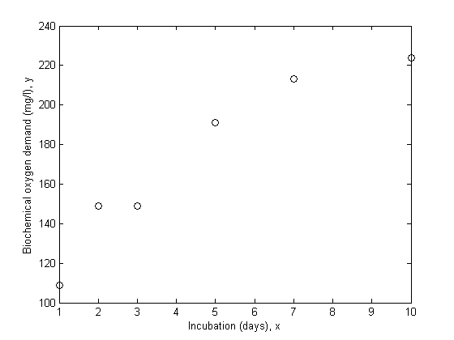
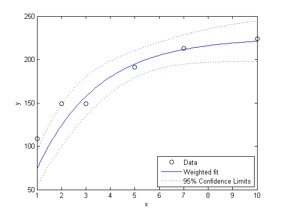
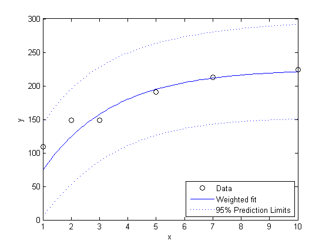
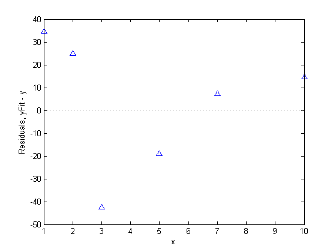
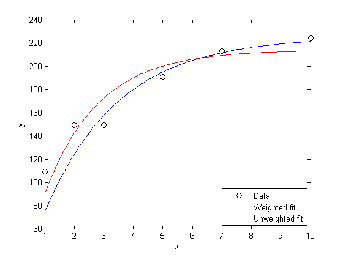

Weighted Nonlinear Regression
The nonlinear least squares algorithm used by the Statistics Toolbox function nlinfit assumes that measurement errors all have the same variance. When that assumption is not true, it's useful to be able to make a weighted fit. This demonstration shows how to do that using nlinfit.
Contents
Data and Model for the Fit
We'll use data collected to study water pollution caused by industrial and domestic waste. These data are described in detail in Box, G.P., W.G. Hunter, and J.S. Hunter, Statistics for Experimenters (Wiley, 1978, pp. 483-487). The response variable is biochemical oxygen demand in mg/l, and the predictor variable is incubation time in days.
x = [1 2 3 5 7 10]'; y = [109 149 149 191 213 224]'; plot(x,y,'ko'); xlabel('Incubation (days), x'); ylabel('Biochemical oxygen demand (mg/l), y');
We'll assume that it is known that the first two observations were made with less precision than the remaining observations. They might, for example, have been made with a different instrument. Another common reason to weight data is that each recorded observation is actually the mean of several measurements taken at the same value of x. In the data here, suppose the first two values represent a single raw measurement, while the remaining four are each the mean of 5 measurements. Then it would be appropriate to weight by the number of measurements that went into each observation.
w = [1 1 5 5 5 5]';
The absolute scale of the weights actually doesn't affect the fit we will make, only the relative sizes. Thus, they could be normalized in some way. For the purposes of estimating the variability in y, it's useful to think of a weight of 1 as representing a "standard" measurement precision. In this example, where the weights represent the number of raw measurements contributing to an observation, the natural scaling for the weights is obvious.
The model we'll fit to these data is a scaled exponential curve that becomes level as x becomes large.
modelFun = @(b,x) b(1).*(1-exp(-b(2).*x));
Just based on a rough visual fit, it appears that a curve drawn through the points might level out at a value of around 240 somewhere in the neighborhood of x = 15. So we'll use 240 as the starting value for b1, and since e^(-.5*15) is small compared to 1, we'll use .5 as the starting value for b2.
start = [240; .5];
Fit the Model with Weights
To make a weighted fit, we'll define "weighted" versions of the data and the model function, then use nonlinear least squares to make the fit. Given these "weighted" inputs, nlinfit will compute weighted parameter estimates.
yw = sqrt(w).*y; modelFunw = @(b,x) sqrt(w).*modelFun(b,x); [bFitw,rw,Jw] = nlinfit(x,yw,modelFunw,start); bFitw
bFitw =
225.1719
0.4008
An important part of any analysis is an estimate of the precision of the model fit. Here, we can compute confidence intervals for the parameters and display them along with the estimates.
bCIw = nlparci(bFitw,rw,Jw)
bCIw =
195.4650 254.8788
0.2223 0.5793
Alternatively, we can use the second and third outputs from nlinfit to approximate the covariance matrix of the estimated parameters, and from that get estimated standard errors.
[Qw,Rw] = qr(Jw,0); msew = sum(abs(rw).^2)/(sum(w)-length(bFitw)); Rinvw = inv(Rw); Sigmaw = Rinvw*Rinvw'*msew; seFitw = sqrt(diag(Sigmaw))
seFitw =
4.7850
0.0288
Estimate the Response Curve
Next, we'll compute the fitted response values, and halfwidths for confidence intervals. By default, those widths are for pointwise confidence bounds for the estimated curve, but nlpredci can also compute simultaneous intervals.
xgrid = linspace(min(x),max(x),100)'; [yFitw, deltaw] = nlpredci(modelFun,xgrid,bFitw,rw,Jw); plot(x,y,'ko', xgrid,yFitw,'b-',xgrid,yFitw+deltaw,'b:',xgrid,yFitw-deltaw,'b:'); xlabel('x'); ylabel('y'); legend({'Data', 'Weighted fit', '95% Confidence Limits'},'location','SouthEast');
Notice that the two downweighted points are not fit as well by the curve as the remaining points. That's as you would expect for a weighted fit.
It's also possible to use nlpredci to estimate prediction intervals for future observations at specified values of x. Those intervals will in effect assume a weight, or measurement precision, of 1.
[yFitw, deltaw] = nlpredci(modelFun,xgrid,bFitw,rw,Jw,[],[],'observation'); plot(x,y,'ko', xgrid,yFitw,'b-',xgrid,yFitw+deltaw,'b:',xgrid,yFitw-deltaw,'b:'); xlabel('x'); ylabel('y'); legend({'Data', 'Weighted fit', '95% Prediction Limits'},'location','SouthEast');
Residual Analysis
In addition to plotting the data and the fit, we'll plot residuals from a fit against the predictors, to diagnose any problems with the model. The residuals should appear independent and identically distributed. Because of the weights, we'll have to scale the residuals to make the plot easier to interpret.
plot(x,rw.*sqrt(w),'b^'); graph2d.constantline(0,'linestyle',':','color',[.5 .5 .5]); xlabel('x'); ylabel('Residuals, yFit - y');
There is some evidence of systematic patterns in this residual plot. Notice how the last four residuals have a linear trend, suggesting that the model might not increase fast enough as x increases. Also, the magnitude of the residuals tends to decrease as x increases, suggesting that measurement error may depend on x. These deserve investigation, however, there are so few data points, that it's hard to attach significance to these apparent patterns.
Fit the Model without Weights
To see what difference the weights made, we can compare to an unweighted fit.
[bFit,r,J] = nlinfit(x,y,modelFun,start); [yFit,delta] = nlpredci(modelFun,xgrid,bFit,r,J); plot(x,y,'ko', xgrid,yFitw,'b-',xgrid,yFit,'r-'); legend({'Data', 'Weighted fit', 'Unweighted fit'},'location','SouthEast'); xlabel('x'); ylabel('y');
Notice how the weighted fit is less influenced by the two points with smaller weights, and as a result, fits the remaining points better. Assuming the weights were known apriori, that makes sense. If they had not been known, the weighted fit might have been a useful exercise to see the influence of those two points on the fit, but could probably not be taken as the appropriate fit without some justification for the weights.